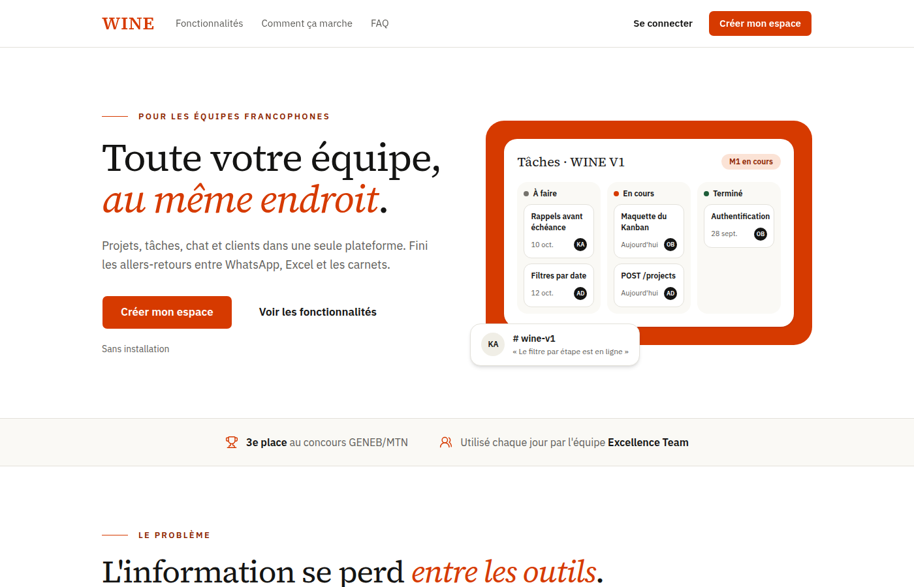

Architecture · Sécurité · Implémentation
Mes Projets & Réalisations
Backend robuste, protocoles d'API, sécurité offensive/défensive et modèles prédictifs
Chaque projet ci-dessous répond à une problématique concrète. Cliquez sur une carte pour inspecter le détail de l'architecture, les mécanismes de sécurité intégrés et accéder aux dépôts de code.




Derrière les projets : Philosophie & Exigence
"Chaque projet représente une occasion de résoudre un problème concret, de tester de nouveaux concepts d'architecture et de renforcer la sécurité des échanges. De la modélisation de base de données à la protection contre les failles OWASP, je conçois mes applications pour qu'elles soient fiables et maintenables."
8
Projets Documentés
6
Podiums & Distinctions
100%
Code Pratique & Testé